Using MyTools.ipynb - Part 1 - Assigning monomials to graph vertices and edges#
This notebook illustrates some of the function definitions contained in MyTools.ipynb.
%run MyTools.ipynb
mydoc(myfun, method='both')
Display the signature of myfun followed by the docstring of myfun.
Set method ='signature' or 'method = 'docstring' or 'method = 'both'
my_graph_show(G)
Show a graph Greg’s way.
Prints the vertices and edges of the graph G.
add_vertex_monomials(G=Graph on 0 vertices, method='integer', ring=False)
Add monomials to vertices of a graph.
The add_vertex_monomials function takes a graph G, as well as optional parameters method and ring. The function creates a new graph H with vertices labeled by monomials. The monomials are chosen based on the number of vertices in G. If the method parameter is set to ‘alpha’ and the number of vertices in G is less than or equal to 10, the monomials are chosen as alphabetical letters (‘a’ to ‘k’). Otherwise, the monomials are chosen as strings of the form ‘a0’, ‘a1’, …, ‘an-1’, where n is the number of vertices in G. The function then adds the vertices from G to H using the monomials as labels, and adds the edges from G to H using the monomials as endpoints. If the ring parameter is set to True, the function also creates a polynomial ring V with the chosen monomials and ‘invlex’ order, and returns both H and V. Otherwise, it returns only H.
INPUT:
G– graph object (default:Graph());method– integer (default:integer);
OUTPUT: The graph with monomials as vertices
EXAMPLES:
This example illustrates … ::
sage: A = ModuliSpace()
sage: A.point(2,3)
xxx
To begin we create specify the states and transitions of the receptor model as an undirected graph.
pos = {0: (0, 0), 1: (1, 1.41), 2: (2, 0), 3: (4,0)} # vertex positions
G = Graph({0: [1, 2], 1: [2], 2: [3]},pos=pos)
print('vertices:',G.vertices(sort=True))
print('edges:',G.edges(sort=True))
G.show(figsize=4,graph_border=True)
G.show(figsize=4,graph_border=True,edge_labels=True)
vertices: [0, 1, 2, 3]
edges: [(0, 1, None), (0, 2, None), (1, 2, None), (2, 3, None)]
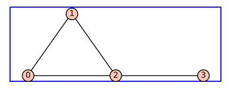
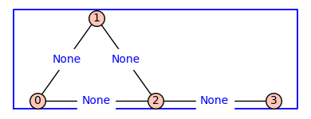
By default the vertices are integers and the edge labels are None. The method .show() has a named parameter edge_lablels that is set to False by default (above left) . To see the edge labels we repeat the show() command using edge_labels=True.
add_vertex_monomials#
The first function we will illustrate is add_vertex_monomials. One the next line, ? add_vertex_monomials provides information about the usage. The command help(add_vertex_monomials) gives the same result without the markdown being processed (not shown).
Note %pdef , %pdoc, % pinfo, and %pinfo2 all work when running this notebook. But only %pdef yields output when the notebook is compiled using jupyter-book build my_book. So I will use help() for now, even though the markdown is not being processed.
help(add_vertex_monomials)
Help on function add_vertex_monomials in module __main__:
add_vertex_monomials(G=Graph on 0 vertices, method='integer', ring=False)
Add monomials to vertices of a graph.
The add_vertex_monomials function takes a graph G, as well as optional parameters method and ring. The function creates a new graph H with vertices labeled by monomials. The monomials are chosen based on the number of vertices in G. If the method parameter is set to 'alpha' and the number of vertices in G is less than or equal to 10, the monomials are chosen as alphabetical letters ('a' to 'k'). Otherwise, the monomials are chosen as strings of the form 'a0', 'a1', ..., 'an-1', where n is the number of vertices in G. The function then adds the vertices from G to H using the monomials as labels, and adds the edges from G to H using the monomials as endpoints. If the ring parameter is set to True, the function also creates a polynomial ring V with the chosen monomials and 'invlex' order, and returns both H and V. Otherwise, it returns only H.
INPUT:
- ``G`` -- graph object (default: `Graph()`);
- ``method`` -- integer (default: ``integer``);
OUTPUT: The graph with monomials as vertices
EXAMPLES:
This example illustrates ... ::
sage: A = ModuliSpace()
sage: A.point(2,3)
xxx
H=add_vertex_monomials(G)
H.show(figsize=4,graph_border=True)
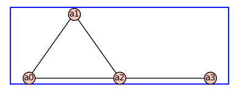
H2=add_vertex_monomials(G,method='alpha')
H2.show(figsize=4,graph_border=True)
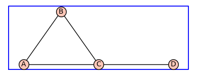
The function add_edge_monomials()defines variables from a polynomial ring and applies them edge labels to the graph. The default method is used below.
H3=add_edge_monomials(G)
H3.show(figsize=4,graph_border=True,edge_labels=True)
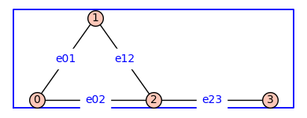
The function add_edge_monomials()also works when vertices are variables from a polynomial ring.
H4=add_edge_monomials(H)
H4.show(figsize=4,graph_border=True,edge_labels=True)
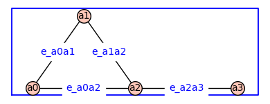
Using method='alpha' in add_edge_monomials() creates simpler edge labels
G = graphs.CycleGraph(4); G.add_edge(0,2)
G = add_edge_monomials(G,method='alpha')
G.show(figsize=4,graph_border=True,edge_labels=True)
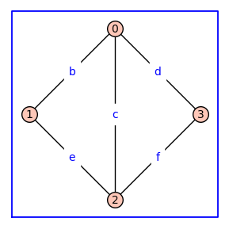
Using ring=True in add_vertex_monomials() constructs a polynomial ring over the variables that label the vertices
(G,V) = add_vertex_monomials(graphs.HouseGraph(),ring=True)
show(V)
from IPython.display import display, Math
display(Math('\\eta \\beta \\alpha \\kappa'))
from IPython.display import display, Math
display(Math(latex(V)))
V.inject_variables()
fv = (a0+a1)*(a0+a3+a4)^2
print(fv)
Defining a0, a1, a2, a3, a4
a1*a4^2 + a0*a4^2 + 2*a1*a3*a4 + 2*a0*a3*a4 + 2*a0*a1*a4 + 2*a0^2*a4 + a1*a3^2 + a0*a3^2 + 2*a0*a1*a3 + 2*a0^2*a3 + a0^2*a1 + a0^3
Using ring=True in add_edge_monomials() constructs a polynomial ring over the variables that label the edges#
(G,E) = add_edge_monomials(graphs.HouseGraph(),method='alpha',ring=True)
show(E)
E.inject_variables()
fe = (b+c)*(b+e+f)^2
print(fe)
Defining b, c, d, e, f, g
c*f^2 + b*f^2 + 2*c*e*f + 2*b*e*f + 2*b*c*f + 2*b^2*f + c*e^2 + b*e^2 + 2*b*c*e + 2*b^2*e + b^2*c + b^3
Below we create a spanning tree labelled according to a breadth-first traversal#
P = graphs.PetersenGraph()
P.show(edge_labels=False)
(BFSVertexList,BFSTree) = P.lex_BFS(tree=True,initial_vertex=0)
BFSTree.show(edge_labels=False)
show(BFSVertexList)
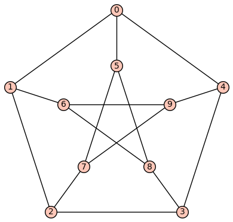
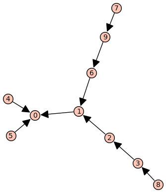
d = dict((v,i) for i, v in enumerate(BFSVertexList))
print(d)
{0: 0, 1: 1, 4: 2, 5: 3, 2: 4, 6: 5, 3: 6, 9: 7, 7: 8, 8: 9}
P2 = P.copy()
P2.relabel(d)
P2 = add_edge_monomials(P2)
P2.show(figsize=6,edge_labels=True)
T2=BFSTree.copy()
T2.relabel(d)
T2 = add_edge_monomials(T2,short_name=True)
T2.show(figsize=6,edge_labels=True)
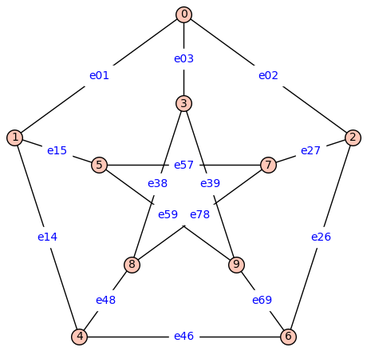
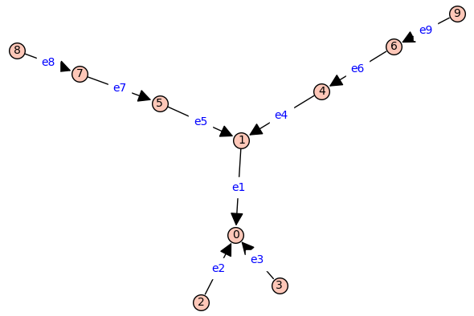